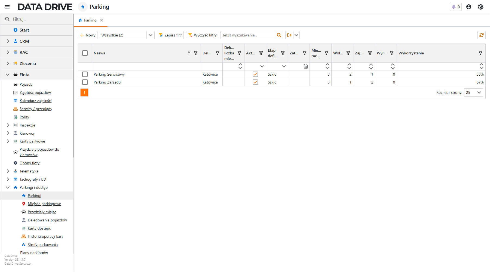
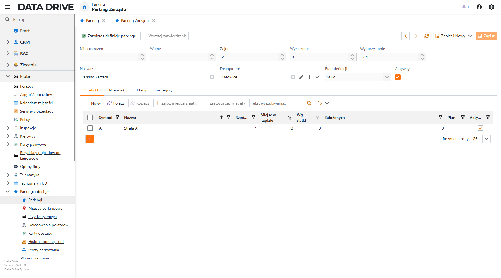
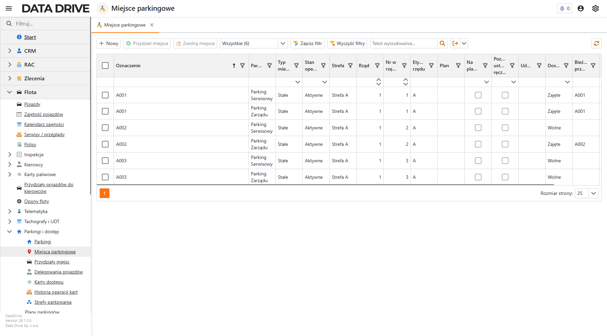
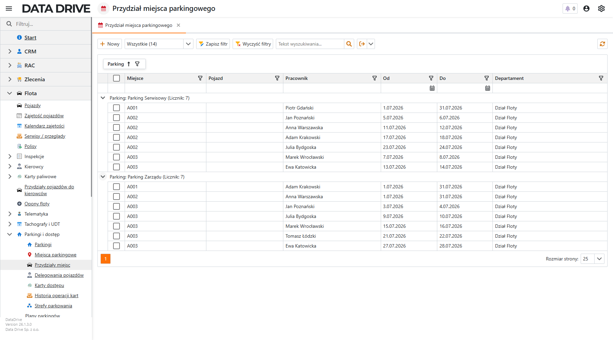
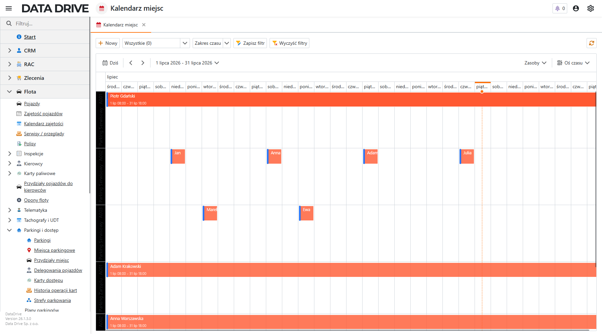
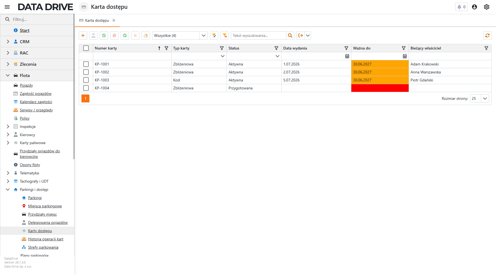
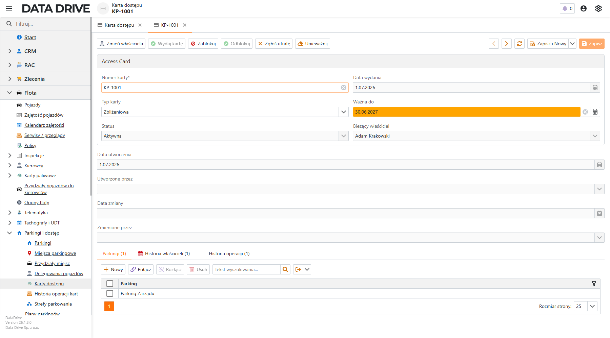
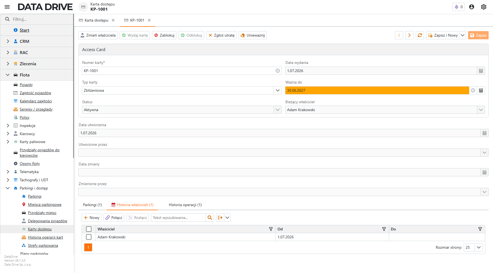

Parkingi i dostęp
Moduł parkingów pozwala opisać parkingi firmy, podzielić je na strefy i miejsca, a potem przypisać stanowiska ludziom — jednym na stałe, innym tylko na wybrane dni. Kalendarz pokazuje zajętość miejsc w skali miesiąca, a karty dostępu sterują wjazdem na parking.
📄 Pobierz ten rozdział jako PDF
O module parkingów
Moduł znajdziesz w lewym menu aplikacji w grupie Flota → Parkingi i dostęp. Składa się z kilku powiązanych ekranów: parkingów i ich stref, pojedynczych miejsc, przydziałów stanowisk oraz kart dostępu. Dane układają się w prostą hierarchię — parking dzieli się na strefy, strefa na miejsca, a miejsce przyjmuje przydział konkretnej osoby lub pojazdu na wskazany okres.
Lista parkingów
Kierownik floty zaczyna tutaj. Ekran zbiera wszystkie parkingi firmy i od razu pokazuje, ile miejsc na każdym z nich jest wolnych, a ile zajętych.

- Nazwa
- Nazwa parkingu, po której go rozpoznajesz — na przykład „Parking Zarządu" albo „Parking Serwisowy". Pod nią kryje się cała definicja stref i miejsc.
- Delegatura
- Oddział albo lokalizacja, do której parking należy.
- Etap definicji
- Mówi, czy parking jest dopiero szkicem, czy zatwierdzoną, gotową do pracy definicją. Dopóki widnieje „Szkic", swobodnie zmieniasz strefy i miejsca.
- Miejsca razem, Wolne, Zajęte, Wyłączone
- Cztery liczniki, które parking wylicza samodzielnie z miejsc i ich przydziałów.
- Wykorzystanie
- Procent zajętości parkingu. Przy 67% dwa z trzech miejsc mają aktywny przydział, więc od razu widzisz, gdzie kończy się zapas.
Definicja parkingu: strefy i miejsca
Po wejściu w parking trafiasz na jego kartę. Górny pasek podsumowuje zajętość, a zakładki niżej prowadzą przez definicję: od stref, przez pojedyncze miejsca, po plan i szczegóły.

Strefa opisuje siatkę: ile rzędów, ile miejsc w rzędzie i ile miejsc realnie z niej powstało (kolumna Założonych). Zamiast klepać stanowiska pojedynczo, tworzysz je z siatki jednym poleceniem.
Aby założyć miejsca dla strefy, wykonaj następujące kroki:
- Otwórz parking i przejdź na zakładkę Strefy.
- Wskaż strefę na liście albo dodaj nową przyciskiem Nowy — podaj liczbę rzędów i liczbę miejsc w rzędzie.
- Na pasku nad listą kliknij Załóż miejsca z siatki.
Miejsca zostaną utworzone według siatki strefy i pojawią się na zakładce Miejsca. Sąsiednia akcja Zastosuj cechy strefy rozsyła na te miejsca wspólne udogodnienia (na przykład ładowarkę EV czy zadaszenie).
Miejsca parkingowe
Ten ekran zbiera wszystkie miejsca ze wszystkich parkingów. Dyspozytor patrzy tu, gdy szuka wolnego stanowiska albo chce sprawdzić, kto stoi na konkretnym miejscu.

- Oznaczenie
- Kod miejsca, na przykład „A001". Nadaje go systemowy silnik numeracji, więc oznaczenia są spójne w całej firmie.
- Parking i Strefa
- Pokazują, do którego parkingu i której strefy miejsce należy — dzięki temu jedna lista obsługuje wiele parkingów.
- Rząd, Nr w rzędzie, Etykieta rzędu
- Pozycja w siatce strefy. Rzędy dostają litery (A, B, C…), a numer porządkuje miejsca od lewej.
- Dostępność
- Najważniejsza kolumna dla dyspozytora: „Wolne" znaczy, że możesz przydzielić miejsce od ręki, a „Zajęte" — że ma aktywny przydział.
- Bieżący przydział
- Oznaczenie miejsca, na którym trwa przydział — potwierdza, że stanowisko jest w użyciu.
Przydział miejsca
Przydział łączy miejsce z osobą lub pojazdem na wskazany okres. Ekran Przydziały miejsc pokazuje pełny obraz, pogrupowany po parkingu, więc sytuację czytasz oddział po oddziale.

Aby przydzielić miejsce pracownikowi, wykonaj następujące kroki:
- Przejdź do Miejsca parkingowe i zaznacz wolne stanowisko.
- Na górnym pasku kliknij Przydziel miejsce.
- Wskaż pracownika, pojazd albo oba naraz i podaj datę Od. Datę Do zostaw pustą dla przydziału bezterminowego albo wpisz dzień zakończenia dla pojedynczego parkowania.
- Zapisz.
Miejsce zmieni dostępność na „Zajęte", a przydział pojawi się na liście i w kalendarzu. Kolumna Departament podciąga się automatycznie z danych pracownika, więc możesz po niej filtrować i grupować.
Kalendarz miejsc
Kalendarz odpowiada na pytanie „kto i kiedy". Każde miejsce dostaje własny wiersz na osi czasu, a domyślnie oś pokazuje cały miesiąc w skali dziennej — od razu widać, które dni mają stałych użytkowników, a które tylko pojedyncze, jednodniowe parkowania.

- Wiersze zasobów
- Po lewej stronie osi stoją miejsca, na przykład „Parking Serwisowy · A001". Każde stanowisko to osobny tor, więc nakładające się rezerwacje od razu rzucają się w oczy.
- Długie pasy
- Pas przez cały miesiąc oznacza miejsce przypisane komuś na stałe — na przykład Piotr Gdański trzyma swoje stanowisko od 1 do 31 lipca.
- Krótkie bloki
- Na miejscach dzielonych widać osobne, jednodniowe bloki: ktoś parkuje 5 lipca, ktoś inny 11 lipca. Dzień bez bloku to dzień wolny.
- Zakres czasu
- Akcja Zakres czasu przełącza okno między tygodniem, dwoma tygodniami a miesiącem. Miesiąc jest ustawiony domyślnie.
Przyciskiem Nowy dodajesz przydział wprost na osi — wskazujesz miejsce, osobę i okres, a wpis pojawia się na właściwym torze.
Karty dostępu
Karta dostępu otwiera szlaban lub bramę parkingu. Ekran Karty dostępu trzyma wszystkie karty razem z ich stanem, terminem ważności i bieżącym właścicielem, więc od jednego spojrzenia wiesz, które działają, a które trzeba wkrótce przedłużyć.

- Numer karty
- Numer nadrukowany na karcie, na przykład „KP-1001" — wiąże fizyczną kartę z rekordem w systemie.
- Typ karty
- Sposób otwierania parkingu: zbliżeniowa albo na kod.
- Status
- Cykl życia karty: przygotowana czeka na wydanie, aktywna działa, a zablokowana, utracona czy unieważniona zamyka dostęp.
- Data wydania i Ważna do
- Termin obowiązywania. Kolumna „Ważna do" świeci pomarańczowo na miesiąc przed końcem i czerwono po jego upływie.
- Bieżący właściciel
- Pracownik, który aktualnie trzyma kartę. Wartość bierze się z historii właścicieli.
Wydanie karty pracownikowi
Wydanie karty łączy trzy rzeczy: właściciela, parkingi, do których karta otwiera wjazd, i wpis w historii operacji. Wszystko robisz z karty otwartej na jej formatce.

Aby wydać kartę, wykonaj następujące kroki:
- Otwórz kartę z listy Karty dostępu.
- Na zakładce Parkingi kliknij Nowy i wskaż parking, do którego karta ma otwierać wjazd.
- Na górnym pasku kliknij Zmień właściciela i wybierz pracownika — poprzedni przydział zostanie zamknięty, a nowy otwarty.
- Kliknij Wydaj kartę.
Status karty zmieni się na „Aktywna", a data wydania zapisze się automatycznie. Nowy właściciel pojawi się na zakładce Historia właścicieli jako wiersz bez daty zakończenia.

Pozostałe akcje prowadzą kartę przez resztę cyklu życia: Zablokuj, Odblokuj, Zgłoś utratę i Unieważnij. Każda zapisuje wpis na zakładce Historia operacji, więc łatwo odtworzyć, co działo się z kartą.